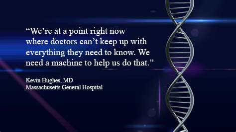
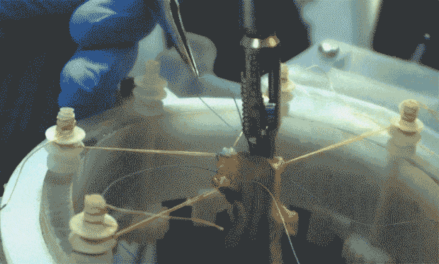

AI is the technology of our past, present, and future.
pick an option below to begin.
Past
One of the first AI uses came in the form of the Mycin artificial intelligence program. Mycin, an early expert system, was used to treat blood infections. In the early 70’s, at Stanford University, the early creation of Mycin began. The idea behind the program was that the system would be able to diagnose patients based entirely on test results and reported symptoms. The application could also ask for more information if stumped and would be able to give details on its reasoning once it came to a conclusive diagnosis. Below is a demonstration of the Mycin expert system in action.
The next major use of AI in medicine came in 1978. Created by fusing the Mycin Project and a clinical data bank known as the ARAMIS Project together, the Stanford Division of Clinical Pharmacology and Department of Computer Science created the RX Project; an application that combined statistical techniques and knowledge-based methods with machine learning. This new application could not only access large sets of clinical data, but also compare various types of patients while “examining the effect of any stratifying variable of interest”.
By now AI has evolved far beyond the RX Project and has many more complexities. According to
Science Daily,
a modern computer application has been made that is able to discover cancer and determine where the cancer is centralized in the body. With just a simple blood test the program can non-invasively detect and locate cancer cells with a success rate of 74%. This success rate is far beyond previous cancer focused apps, which together average to just a 38% success rate.
In addition to its uses in diagnostics and treatment, AI is also currently being used to educate future healthcare professionals. Through scenario testing, Human Dx helps train medical students by daily postings called the GMR (Global Morning Report). Its real-life scenario situations allow students to analyze, diagnose, and treat “cyber” patients without the risks or costs associated with treating live patients.
The future of medical AI looks similar to the present, however its performance will be significantly better. While data exponentially increases, clinical AI will become more precise and accurate than ever before. According to many, healthcare as an industry must brace itself for a massive shift in how patients are treated. While some see AI entirely replacing doctors and other healthcare providers, most believe doctors will be forced to become more technically savvy and use AI as a powerful tool to provide solid data-based clinical treatment.

In a reality that’s occasionally indistinguishable from a sci-fi flick, there are a few applications in the making that are simply mind blowing. One of those is a robotic AI capable of complex surgeries, often outperforming human surgeons. Although the application currently needs professional intervening about 40% of the time, the goal is for it to become entirely autonomous. According to researchers working on the Smart Tissue Autonomous Robot (STAR), future surgeries will be preformed by their robot and a human surgeon acting as a supervisor to it.

For more information check out the Medical Futurist blog here!
Sources & Explanation
Click here for sources, detailed explanations, and usability tests.